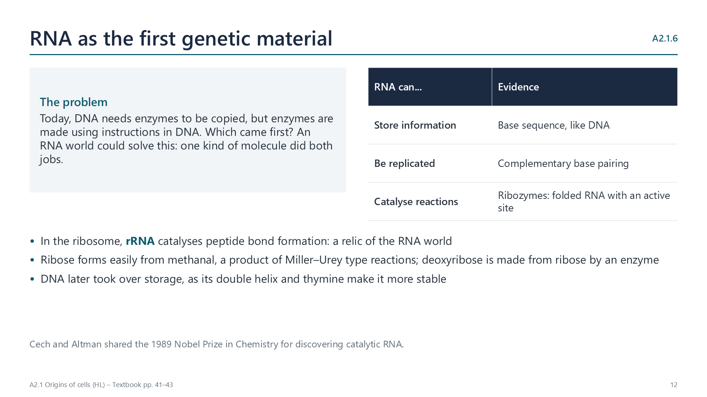

Written for this site from the class slides, with textbook page references for each statement. The chapter is on pages 34–47 of the course textbook. Image credits are on slide 31.
The early atmosphere had almost no free oxygen, so there was no ozone layer and strong ultraviolet light reached the surface. Carbon dioxide and methane were much more concentrated, so the greenhouse effect made the Earth hotter. With energy from lightning, UV and volcanoes, carbon compounds such as amino acids could form by chemical reactions that no longer happen, because oxygen and living things now break them down.
A2.1.2
Cells: the smallest self-sustaining units
p. 36
A cell has a membrane, genetic material and its own metabolism, so it can sustain itself. Its separate parts cannot. Viruses are usually classed as non-living: they are not cells, have no metabolism or ribosomes of their own, and can reproduce only inside a host cell, although they do have genes and evolve.
From chemicals to cells
A2.1.3
Why the first cells are hard to explain
pp. 36–38
Pasteur’s swan-necked flasks showed that cells come only from existing cells. Yet the first cells must have formed from non-living matter. That needed catalysis, self-replication of molecules, self-assembly and compartmentalization. Competing hypotheses put protocells, genes or metabolism first; none is proven, because early conditions cannot be recreated and the first cells left no fossils.
A2.1.4
The Miller–Urey experiment
pp. 38–40

In 1953, sparks passed through methane, ammonia, hydrogen and water vapour produced amino acids within a week. Strengths: a controlled, repeatable system showing organic molecules can form without life. Limitations: the early atmosphere probably had more carbon dioxide and less methane; UV may have mattered more than sparks; monomers are still far from a cell.
A2.1.5
Vesicles form spontaneously
pp. 40–41
Fatty acids are amphipathic. In water they form bilayers that close into spherical vesicles, with no enzymes needed. A membrane-bound compartment lets the chemistry inside become different from the outside.
A2.1.6
The RNA world
pp. 41–43
Today DNA needs enzymes to be copied, and enzymes need DNA. RNA could have done both jobs: it stores information, can be replicated by base pairing, and can fold into catalytic ribozymes. In ribosomes, rRNA still catalyses peptide bond formation, a likely relic of this stage.
The common ancestor
A2.1.7
Evidence for LUCA
pp. 43–45
All life shares the same genetic code, amino acids and similar ribosomes, and about 355 protein families seem to go back to one ancestor: the last universal common ancestor, about 4 billion years ago. Other early forms of life may have existed but became extinct, outcompeted by LUCA and its descendants.
A2.1.8
Dating early life
p. 46
Fossils and stromatolites are dated by radiometric dating of the rocks. A molecular clock uses the number of differences in a conserved gene and the rate of mutation to estimate when groups shared an ancestor. Life has been evolving for at least 3.7 billion years.
A2.1.9
LUCA and hydrothermal vents
p. 47
Haematite tubes in vent rock at Nuvvuagittuq, Canada, at least 3.77 billion years old, look like the work of vent microbes. Genes probably inherited from LUCA suggest it was anaerobic, fixed carbon dioxide, used hydrogen and lived at high temperatures: conditions found at deep-sea vents.
Videos
Select a video to play it here. Select it again to close it.
Print this guide and complete it as you work through the slides and videos. It asks for your own explanations, so close the notes while you try each section.
A printable worksheet covering all nine statements, from quick recall to data questions and a longer answer. It has 40 marks and takes about 40 minutes, or you can do one section at a time.